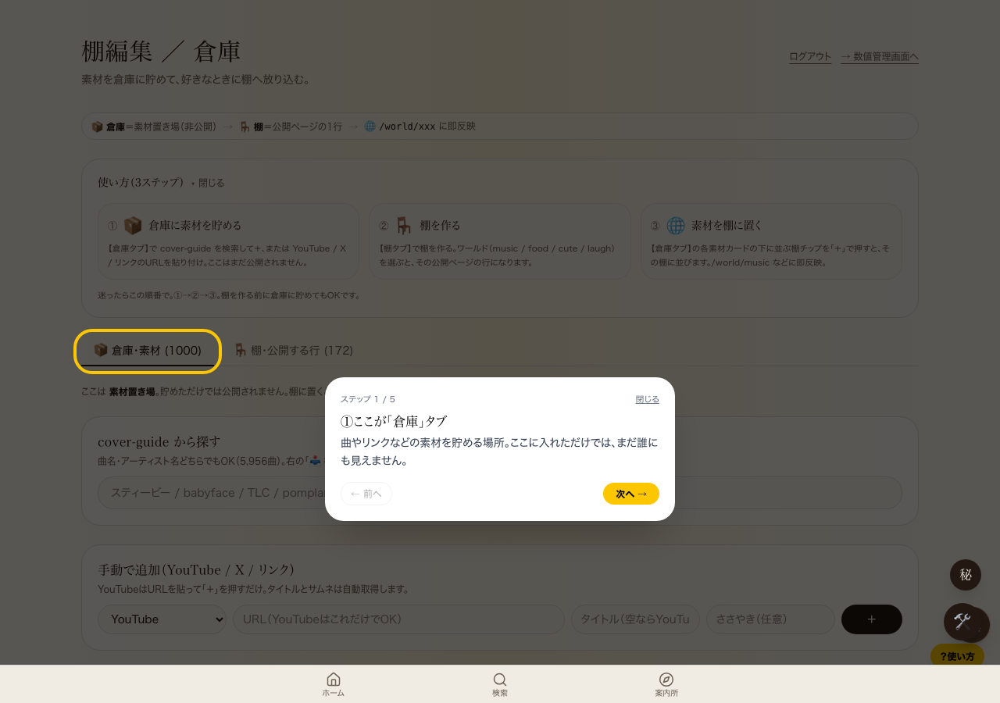

{
"overlayPresent": true,
"overlayRect": {
"w": 1280,
"h": 900
},
"viewport": {
"w": 1280,
"h": 900
},
"coversFullViewport": true,
"backdropBg": "oklab(0 0 0 / 0.65)",
"backdropOpacityClass": "absolute inset-0 bg-black/65",
"shelfTabButtonRect": {
"x": 375.5703125,
"y": 450.25
},
"topElementAtThatPoint": {
"tag": "DIV",
"cls": "absolute inset-0 bg-black/65"
},
"shelfTabButtonIsBlocked": true,
"speechBubbleText": "ステップ 1 / 5\n閉じる\n①ここが「倉庫」タブ\n\n曲やリンクなどの素材を貯める場所。ここに入れただけでは、まだ誰にも見えません。\n\n← 前へ\n次へ →"
}修正：倉庫か棚に既存データがある時は、この案内を自動で出さないようにした（手動の『？使い方』ボタンはそのまま使える）。コードの変更はもう本体（main）に合流済み。
